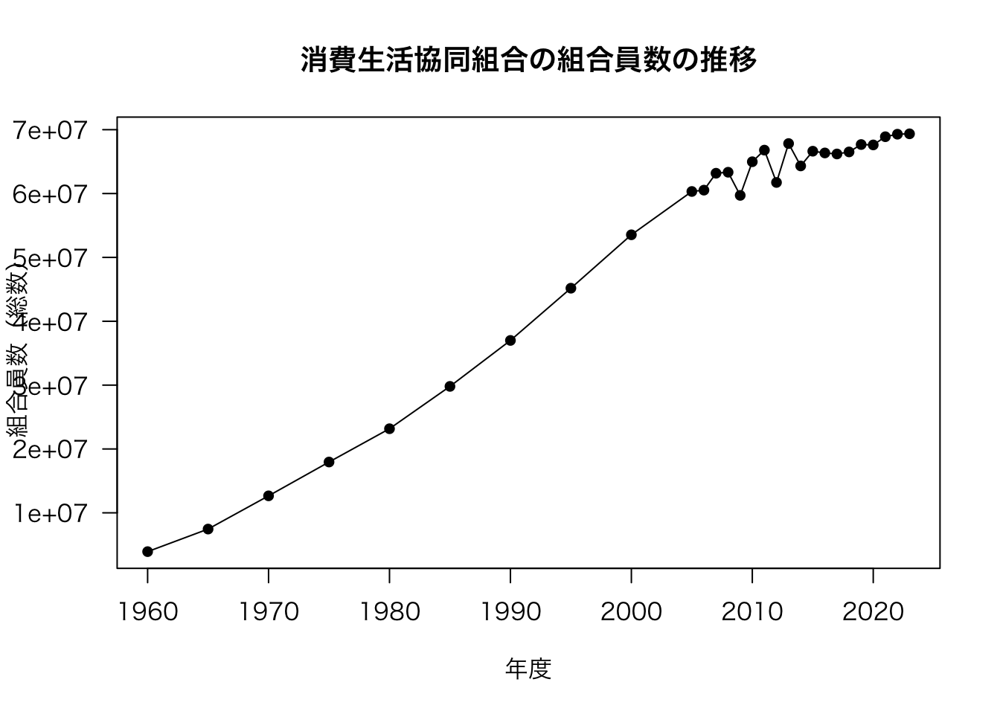
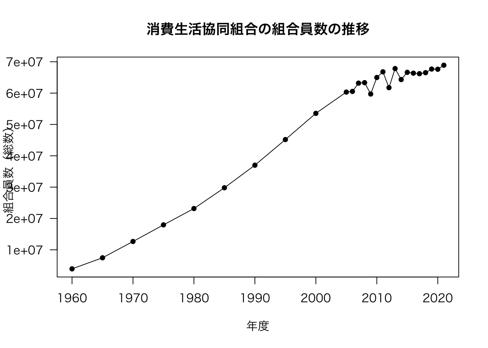
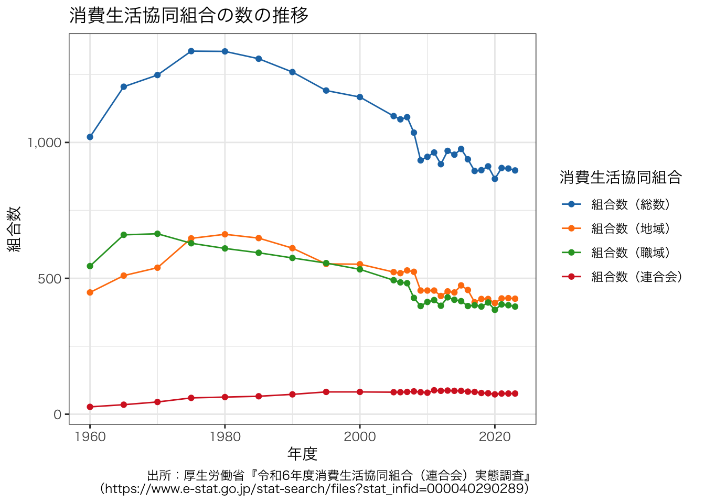
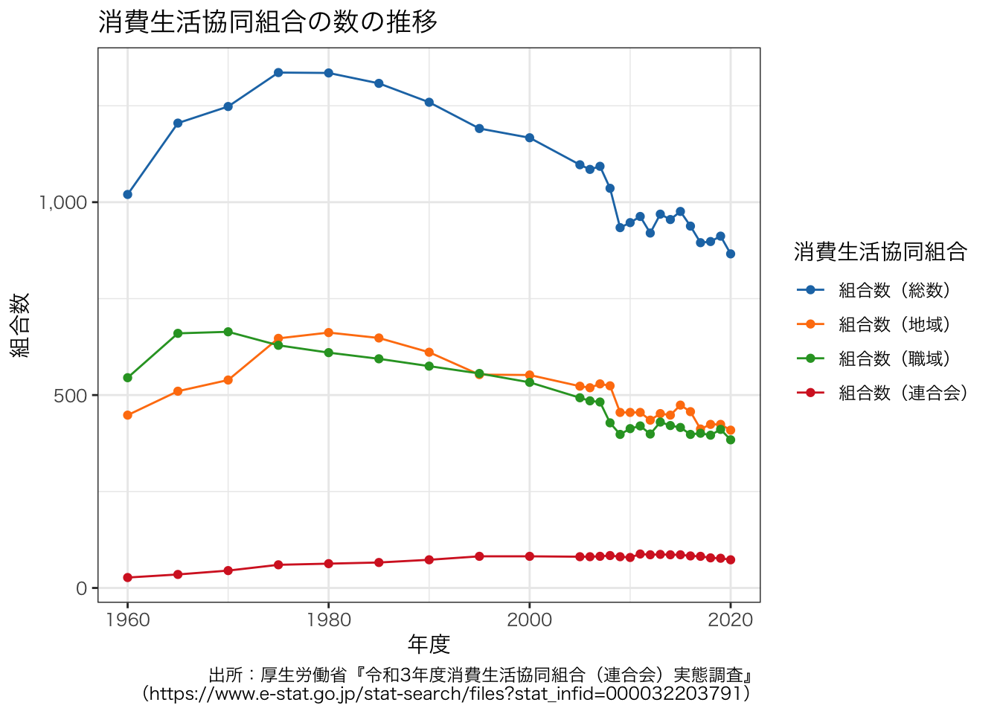
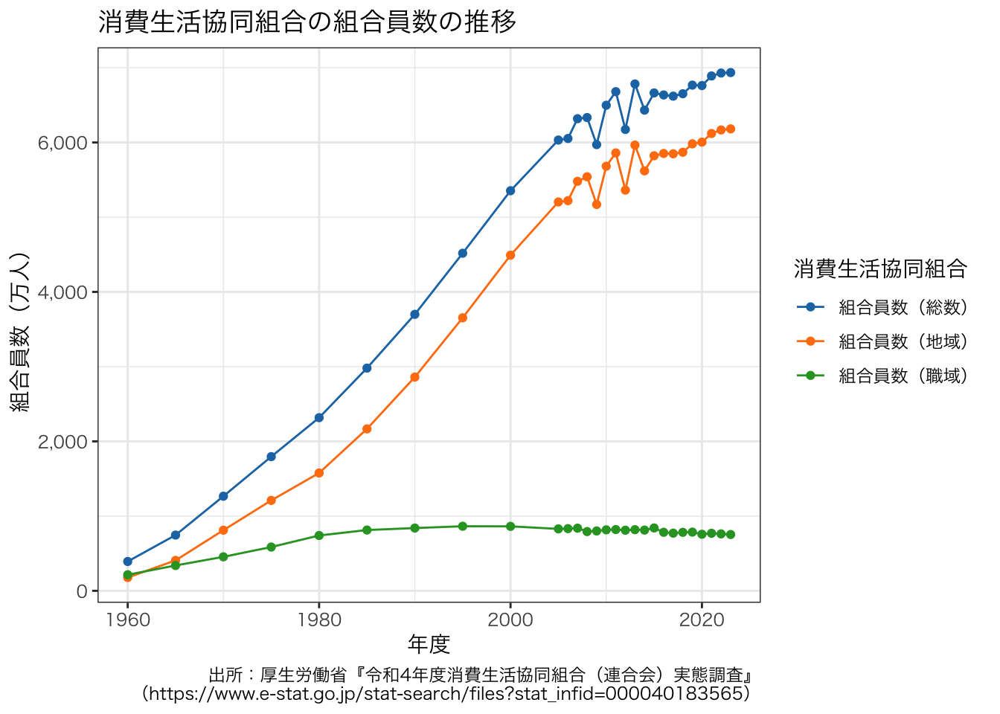

getwd()統計データを用いた作図：e-Stat編
ここでは，消費生活協同組合の組合数と組合員数の推移の折れ線グラフを作成します。
日本の統計データの多くは，政府統計の総合窓口 から取得可能です。 このWebサイトはe-Statと呼ばれています。 e-Statが何かを知るためには，『e-Stat』とは？ などを読んでください。
消費生活協同組合に関する統計データはe-Statから取得できます。 消費生活協同組合の組合数と組合員数の推移がわかる最新のデータは，次のページにあります。 このページで，2-1.xlsx という名前のファイルをダウンロードできます。
消費生活協同組合（連合会）実態調査 / 令和4年度消費生活協同組合（連合会）実態調査
2-1 組合数及び組員員数の状況
https://www.e-stat.go.jp/stat-search/files?stat_infid=000040061084
ここでは目的のページを示しましたが，実際には，自分が欲しいデータがダウンロードできるページを見つけなければなりません。 実際にGoogle検索やe-Stat内の検索をしてみて，このページにたどり着けるか試してみてください。 どういう検索ワードを追加すれば，このページにたどり着けるでしょうか。
さて，ここからどのようにして折れ線グラフを描くのでしょうか。
Microsoft Officeを構成するアプリケーションのひとつであるExcelを起動して，ファイルを開き，Excelの機能を使って折れ線グラフを作成できます。 Excelの図で満足できる人はこれで終わりです。 ちまちまとマウスをクリックしながら，はたまた数値を別のセルに移動させながら，折れ線グラフを作成しましょう。 以下の説明は，Excelでは満足できない人のためのものです。
これ以降は，The Comprehensive R Archive Network から自分のパソコンのOSに合ったファイルをダウンロードして，自分のパソコンにインストールしておく必要があります。 Rをはじめて使う人はExcelを使って作成するグラフとRを使って作成するグラフの何が違うのか，どちらが好みかを考えながら作業してみてください。
1 ExcelファイルをRで扱う
1.1 作業ディレクトリの変更
まず，Rを起動し，現在，パソコンのどこにいるのかを確認する。 「どこ」というのは，自分のパソコンのディレクトリ（フォルダとも呼ぶ）構成の「どこ」にいるのかという意味です。 Windowsなら C: から始まり，macOSなら / から始まる階層構造における位置のことです。 何も設定をしていなければ，起動直後のRはホームディレクトリにいるはずです。 次のコマンドで，自分がどこにいるか（カレントディレクトリの場所）を確認できます。
作業ディレクトリ（working directory）だからwdであり，それを得るという意味でgetを付けています。 これは関数と呼ばれるもので，既に決まっていて，自分で適当に考えてもエラーが返ってくるでしょう。 通常，頻繁に使う関数は覚えておくべきであり，覚えるためにはその関数の意味と関数の綴りをあなたの頭の中で対応させておくとよいでしょう。
作業ディレクトリを設定するには次のようにします。
setwd("~")“~” はホームディレクトリを意味します。 “~” を自分が作業したいディレクトリに変更すればよいです。 よくわからないと思うので，最初は，先ほどダウンロードしたExcelファイルをホームディレクトリに移動して，そこで作業するとよいでしょう。 ファイルの移動は，Rではなく，Windowsならエクスプローラー，macOSならFinderを使います。 この場合，Rの作業ディレクトリはホームディレクトリのままにしておいてください（起動後変更しない）。
1.2 Excelファイルの読み込み
readxlパッケージを初めて使う場合のみ，以下のコマンドを実行します。 一度実行すれば，パソコンの電源を切ったとしても，再度実行する必要はありません（実行してもエラーにはならないので，不安なら実行すればよい）。
install.packages("readxl")Rに慣れていない人は，まずはコンマ区切り（CSV）またはタブ区切り（TSV）テキストファイルを読み込む練習から始めるべきかもしれません。 これらのファイルは，拡張子が .csv や .tsv となっています。 また，Excelのようにセル結合等，見栄えを意識したデータではないため，CSVファイルは初心者には非常に扱いやすいです。 ただし，このページのようにさまざまなデータはExcelファイル形式で提供されていることが多いです。 ここでは，CSVファイルの読み込みについては説明しませんので，各自で調べて，CSVファイルを読み込めるようになっておくと，以下の内容の理解が容易になるはずです。
以下のコマンドでExcelファイルを読み込むことができます。
library(readxl)
df <- readxl::read_excel("2-1.xlsx", col_names = FALSE, skip = 2)次に，読み込んだデータの前処理をします。 前処理で何をやるかは，そのファイルがどうなっているかに依存します。 この作業を地道にやることにより，データ分析を見越して綺麗なファイルを作成しなければならないことに気づくはずです。
今扱っているデータは前処理が若干面倒です。 e-StatにあるExcelファイルの多くはデータを扱えるようにするまでが一苦労です。 本当なら試行錯誤が必要ですが，以下のコードをまとめて実行すれば問題なく読み込めます。
# 下にある注を削除
df <- df[-c((nrow(df) - 3):nrow(df)), ]
# ヘッダーを整理
tmp <- gsub(" ", "", df[1, ])
for (i in 2:length(tmp)) {
if (is.na(tmp[i])) {
tmp[i] <- tmp[i - 1]
}
}
names(df) <- paste(tmp, gsub(" ", "", df[2, ]), sep = "（")
names(df) <- sub("（NA", "", names(df))
names(df)[grep("（", names(df))] <- paste0(grep("（", names(df), value = TRUE), "）")
df <- df[-c(1:3), ]
# 昭和32年という非表示の行を見つけて唖然とする
df[1, ]# A tibble: 1 × 11
年度 `組合数（総数）` `組合数（地域）` `組合数（職域）` `組合数（連合会）`
<chr> <chr> <chr> <chr> <chr>
1 昭和32 1013 526 464 23
# ℹ 6 more variables: `組合員数（総数）` <chr>, `組合員数（地域）` <chr>,
# `組合員数（職域）` <chr>, `1組合当たり（総数）` <chr>,
# `1組合当たり（地域）` <chr>, `1組合当たり（職域）` <chr>df <- df[-1, ]
# 年度を西暦に強引に変換する
df$年度 <- c(seq(35 + 1925, 2005, 5), seq(2006, 2021, 1))
# 列を整数型に変換する
str(df)tibble [26 × 11] (S3: tbl_df/tbl/data.frame)
$ 年度 : num [1:26] 1960 1965 1970 1975 1980 ...
$ 組合数（総数） : chr [1:26] "1020" "1205" "1248" "1336" ...
$ 組合数（地域） : chr [1:26] "448" "510" "539" "647" ...
$ 組合数（職域） : chr [1:26] "545" "660" "664" "629" ...
$ 組合数（連合会） : chr [1:26] "27" "35" "45" "60" ...
$ 組合員数（総数） : chr [1:26] "3924007" "7458091" "12660831" "17956966" ...
$ 組合員数（地域） : chr [1:26] "1776139" "4068500" "8113163" "12099129" ...
$ 組合員数（職域） : chr [1:26] "2147868" "3389591" "4547668" "5857837" ...
$ 1組合当たり（総数）: chr [1:26] "3952" "6189" "10524" "14073" ...
$ 1組合当たり（地域）: chr [1:26] "3965" "7977" "15052" "18561" ...
$ 1組合当たり（職域）: chr [1:26] "3941" "5136" "6848" "9313" ...df[, 2:ncol(df)] <- lapply(df[, 2:ncol(df)], as.integer)
str(df)tibble [26 × 11] (S3: tbl_df/tbl/data.frame)
$ 年度 : num [1:26] 1960 1965 1970 1975 1980 ...
$ 組合数（総数） : int [1:26] 1020 1205 1248 1336 1335 1308 1259 1191 1167 1097 ...
$ 組合数（地域） : int [1:26] 448 510 539 647 662 648 611 553 552 523 ...
$ 組合数（職域） : int [1:26] 545 660 664 629 610 594 575 556 533 493 ...
$ 組合数（連合会） : int [1:26] 27 35 45 60 63 66 73 82 82 81 ...
$ 組合員数（総数） : int [1:26] 3924007 7458091 12660831 17956966 23170446 29802226 36997766 45176483 53540589 60323892 ...
$ 組合員数（地域） : int [1:26] 1776139 4068500 8113163 12099129 15767426 21670075 28600269 36535437 44914534 52038560 ...
$ 組合員数（職域） : int [1:26] 2147868 3389591 4547668 5857837 7403020 8132151 8397497 8641046 8626055 8285332 ...
$ 1組合当たり（総数）: int [1:26] 3952 6189 10524 14073 18216 23995 31195 40736 49346 59374 ...
$ 1組合当たり（地域）: int [1:26] 3965 7977 15052 18561 23818 33441 46809 66068 81367 99500 ...
$ 1組合当たり（職域）: int [1:26] 3941 5136 6848 9313 12136 13690 14604 15541 16184 16806 ...# 以下は好みであり，実行しなくてもよい
dfcoop <- data.frame(df, check.names = FALSE)最後に，Excelファイルから読み込んだデータが分析可能な状態になっているかを確認します。 データフレームの先頭だけを確認するためには，以下のコードを実行します。
head(dfcoop) 年度 組合数（総数） 組合数（地域） 組合数（職域） 組合数（連合会）
1 1960 1020 448 545 27
2 1965 1205 510 660 35
3 1970 1248 539 664 45
4 1975 1336 647 629 60
5 1980 1335 662 610 63
6 1985 1308 648 594 66
組合員数（総数） 組合員数（地域） 組合員数（職域） 1組合当たり（総数）
1 3924007 1776139 2147868 3952
2 7458091 4068500 3389591 6189
3 12660831 8113163 4547668 10524
4 17956966 12099129 5857837 14073
5 23170446 15767426 7403020 18216
6 29802226 21670075 8132151 23995
1組合当たり（地域） 1組合当たり（職域）
1 3965 3941
2 7977 5136
3 15052 6848
4 18561 9313
5 23818 12136
6 33441 13690これはExcelファイルと同じような見た目であるため，理解しやすいのではないでしょうか。 このようになっていれば，作図や分析に使えるデータであるといえます。 もう少し正確に確認するためには，次のコードを実行します。
str(dfcoop)'data.frame': 26 obs. of 11 variables:
$ 年度 : num 1960 1965 1970 1975 1980 ...
$ 組合数（総数） : int 1020 1205 1248 1336 1335 1308 1259 1191 1167 1097 ...
$ 組合数（地域） : int 448 510 539 647 662 648 611 553 552 523 ...
$ 組合数（職域） : int 545 660 664 629 610 594 575 556 533 493 ...
$ 組合数（連合会） : int 27 35 45 60 63 66 73 82 82 81 ...
$ 組合員数（総数） : int 3924007 7458091 12660831 17956966 23170446 29802226 36997766 45176483 53540589 60323892 ...
$ 組合員数（地域） : int 1776139 4068500 8113163 12099129 15767426 21670075 28600269 36535437 44914534 52038560 ...
$ 組合員数（職域） : int 2147868 3389591 4547668 5857837 7403020 8132151 8397497 8641046 8626055 8285332 ...
$ 1組合当たり（総数）: int 3952 6189 10524 14073 18216 23995 31195 40736 49346 59374 ...
$ 1組合当たり（地域）: int 3965 7977 15052 18561 23818 33441 46809 66068 81367 99500 ...
$ 1組合当たり（職域）: int 3941 5136 6848 9313 12136 13690 14604 15541 16184 16806 ...2 折れ線グラフ
さて，ここからが本題です。 折れ線グラフを作成してみましょう。
plot(dfcoop[, c("年度", "組合数（総数）")], type = "o", main = "消費生活協同組合の数の推移", xlab = "年度", pch = 16, las = 1)
macOSの場合，日本語部分が文字化けする（トーフになる）かもしれません。 回避策はありますが，該当箇所を英語にするのが早いです。 気になるようであれば，~/.Rprofile や fontregisterer などを参考にするとよいでしょう。 よく分からない場合は文字化けしたまま進んで構いません。 Rの操作に慣れてきたら，文字化けに対応しましょう（ひとまず，自分のせいではないと思うことが大事）。
先ほどの図をよく見ると，2005年までは点の数が少ないことがわかります。 これは，元データを正しく反映したものです。
dfcoop$年度 [1] 1960 1965 1970 1975 1980 1985 1990 1995 2000 2005 2006 2007 2008 2009 2010
[16] 2011 2012 2013 2014 2015 2016 2017 2018 2019 2020 2021このことから，Rでは何も指定しなくても，軸のスケールを正しく反映した図が描かれることがわかります。
続いて，組合員数の図を描画してみましょう。
plot(dfcoop[, c("年度", "組合員数（総数）")], type = "o", main = "消費生活協同組合の組合員数の推移", xlab = "年度", pch = 16, las = 1)
それっぽい図が描けました。
続いて，プロットした図を保存しましょう。
保存するためには，まず，ファイル名を決めます。 ファイル名には出力先ディレクトリ名も含めて表記することができます。 どこに出力するのかは自分で決めなければなりません。 そのためには，作業ディレクトリへの理解が必要です。
ここでは，ファイル名を fig/number_of_coop_members_plot.pdf とします。 これは，作業ディレクトリに fig というフォルダ（ディレクトリ）があり，その中に number_of_coop_members_plot.pdf という名前のPDFファイルを作るという意味です。 拡張子はファイル形式を決める重要な要素です。 先ほどのファイル名は， ./fig/number_of_coop_members_plot.pdf としてもまったく同じです。 つまり，. が作業ディレクトリを指します。
作業ディレクトリに fig フォルダがあるかどうか事前に知るには，エクスプローラー（Finder）で確認する必要があります。 しかし，こうした確認は面倒なため，Rで次のようにすると便利です。
outdir <- "./fig"
if (!file.exists(outdir)) {
dir.create(outdir)
}このコードは，出力先ディレクトリがなければ，出力先ディレクトリを作成し，あれば何もしないという処理をRに指示しています。 このコードは便利なので，個人的によく使います。
図を表示するまえに，あらかじめ図の描画先を指定することで，図をファイルに保存できます。 例えば，以下のように，pdfで保存先を指定した後，図を描画し，最後に dev.off() として描画先を閉じます。
pdf(file.path(outdir, "number_of_coop_members_plot.pdf"), width = 10, height = 10)
plot(dfcoop[, c("年度", "組合員数（地域）")], type = "o", main = "消費生活協同組合の組合員数の推移", xlab = "年度", pch = 16, las = 1)
dev.off()また，グラフを描いた直後に次のコマンドにより，保存する方法もある。
dev.copy(cairo_pdf, file = file.path(outdir, "number_of_coop_members_plot2.pdf"))
dev.off()
dev.copy(png, file = file.path(outdir, "number_of_coop_members_plot2.png"))
dev.off()dev.copy()とpdf()で出力されるPDFは同じではありません。 結果を比較して，好みの保存方法を使うようにしてください。
実用的なファイルフォーマットは，ほぼPDFとPNGだけです。 Wordで使うことを考えると，WindowsではPNGで，macOSではPDFで保存すると綺麗な図が作成できるはずです。 ちなみに，保存は書き出しや出力と言い換えても，多くの場合は問題ありません。
以下では，授業で使用した図の作成方法を紹介します。
3 ggplot2を用いた折れ線グラフ
ggplot2 で作成したグラフは一般的に綺麗です。 ただし，好き嫌いが分かれます。 個人的には，Rのコードが分かりやすく，短時間でいい感じのグラフに仕上がることから，ggplot2 は非常に便利である（ただし，凝り過ぎには注意）と考えています。
library(ggplot2)
library(reshape2)
dfcoop2 <- reshape2::melt(dfcoop[, c("年度", grep("組合数（", names(dfcoop), value = TRUE))], id.vars = "年度")
names(dfcoop2)[2:3] <- c("消費生活協同組合", "組合数")
g <- ggplot(data = dfcoop2) +
geom_line(aes(x = 年度, y = 組合数, group = 消費生活協同組合, colour = 消費生活協同組合)) +
geom_point(aes(x = 年度, y = 組合数, group = 消費生活協同組合, colour = 消費生活協同組合)) +
ggtitle("消費生活協同組合の数の推移")
g + theme(text = element_text(family = "HiraKakuProN-W3"))
最後のところでエラーが出る場合は，g だけにして，プラス以降を入力しない場合どうなるか確かめてください。 容易に想像できるように，最後の行はフォントを指定しています。 このコードの挙動は，あなたのパソコンにインストールされているフォントに依存します。 うまく表示されない原因が文字化け（トーフ）の場合は，無視して先に進んでください。
次のように，少し工夫するだけで見栄えは劇的に改善します。
# 便利なカラーパレット
library(ggsci)
g <- ggplot(data = dfcoop2, aes(x = 年度, y = 組合数, group = 消費生活協同組合, colour = 消費生活協同組合)) +
geom_line() +
geom_point() +
# scale_x_continuous(breaks = seq(1960, 2020, 10), minor_breaks = NULL) +
scale_y_continuous(labels = scales::comma_format()) +
ggtitle("消費生活協同組合の数の推移") +
labs(caption = "出所：厚生労働省『令和3年度消費生活協同組合（連合会）実態調査』\n（https://www.e-stat.go.jp/stat-search/files?stat_infid=000040061084）") +
theme_bw() +
# theme_minimal() +
# theme_classic() +
scale_color_d3()
g + theme(text = element_text(family = "HiraKakuProN-W3"))
いい感じの図が描けました。
ggplot2 で作成した図をファイルに保存するときは，以下のコードを実行します。
ggsave(filename = file.path(outdir, "number_of_coop.pdf"), plot = g, width = 8, height = 4)
ggsave(filename = file.path(outdir, "number_of_coop.png"), plot = g, width = 8, height = 4)同じようにして，組合員数の推移のグラフを描くことができます。
dfcoop2 <- reshape2::melt(dfcoop[, c("年度", grep("組合員数（", names(dfcoop), value = TRUE))], id.vars = "年度")
names(dfcoop2)[2:3] <- c("消費生活協同組合", "組合員数")
g <- ggplot(data = dfcoop2, aes(x = 年度, y = 組合員数 / 10000, group = 消費生活協同組合, colour = 消費生活協同組合)) +
geom_line() +
geom_point() +
scale_y_continuous(labels = scales::comma_format(), name = "組合員数（万人）") +
ggtitle("消費生活協同組合の組合員数の推移") +
labs(caption = "出所：厚生労働省『令和3年度消費生活協同組合（連合会）実態調査』\n（https://www.e-stat.go.jp/stat-search/files?stat_infid=000040061084）") +
theme_bw() +
scale_color_d3()
g + theme(text = element_text(family = "HiraKakuProN-W3"))
ggsave(filename = file.path(outdir, "number_of_coop_members.pdf"), plot = g, width = 8, height = 4)4 練習問題
上の内容を応用して，次の消費生活協同組合の事業種類別の組合数のデータを基に，折れ線グラフのPDFファイルを作成してみましょう。
消費生活協同組合（連合会）実態調査 / 令和4年度消費生活協同組合（連合会）実態調査
Rに慣れるまでは，前処理のハードルが非常に高いです。 そこで，ここではExcelファイルをCSVに変換したファイルを提供します。 以下は，2-2.xlsx を整理するためのコードです（読み飛ばしてよい）。
df <- readxl::read_excel("2-2.xlsx", col_names = FALSE, skip = 1)# 下にある注を削除
df <- df[-c((nrow(df) - 5):nrow(df)), ]
# ヘッダーを整理
tmp <- c(gsub(" |\r|\n", "", df[1, ])[1:3], gsub(" |\r|\n", "", df[2, ])[seq(5, 18, 3)])
df <- df[, c(1:2, 4, seq(5, 15, 3), 18)]
names(df) <- tmp
df <- df[-c(1:4), ]
# 組合数の行のみ抽出する
df <- df[df[, "組合種類"] == "組合数", ]
# 昭和32年という非表示の行を見つけて唖然とする
# df[1, ]
df <- df[-1, ]
# 年度を西暦に強引に変換する
df[, "年度"] <- c(seq(35 + 1925, 2005, 5), seq(2006, 2021, 1))
# 列を整数型に変換する
df[df == "-"] <- ""
df[, 3:ncol(df)] <- lapply(df[, 3:ncol(df)], as.integer)
# 以下は好みであり，実行しなくてもよい
dfcoop <- data.frame(df)次の表から，CSVファイルをダウンロードしてください。
ダウンロード後，エクスプローラー（Finder）を用いて，ファイルを作業ディレクトリに移動し，ファイル名を 2-2.csv に変更してください。 CSVファイルを読み込むには，次のようにします。
dfcoop <- read.csv("2-2.csv")正しく読み込めているか，dfcoop や str(dfcoop) を実行して確かめてください。 文字化けしている場合は，文字コードを指定して read.csv() を実行してください。 例えば，次のようにします。
dfcoop <- `read.csv("2-2.csv", fileEncoding = "UTF-8")`正しく読み込めていることが確認できたら，ggplot2 を使って，グラフを描いてみましょう。